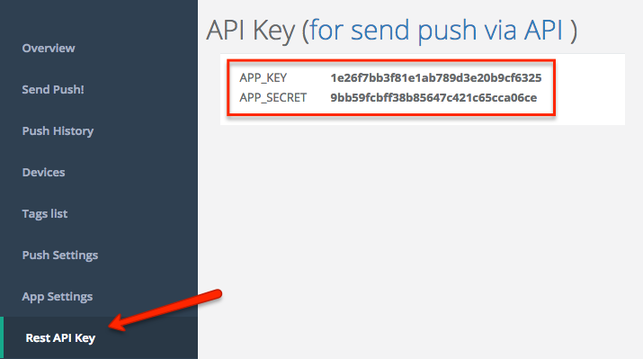

Server API Overview
The Jeapie Server API serves purpose of programmatically delivering notifications from your server to user’s device or from one mobile device to another.
Authentication
API requests are identified using HTTP basic authentication.
Use the application key ("APP_KEY") as your username.
Use the application secret ("APP_SECRET") as your password.
You can find API key of your mobile/web application here: 
Code example
// via shell
// example APP_KEY = 1e26f7bb3f81e1ab789d3e20b9cf6325
// example APP_SECRET = 9bb59fcbff38b85647c421c65cca06ce
curl -X \
-u "1e26f7bb3f81e1ab789d3e20b9cf6325:9bb59fcbff38b85647c421c65cca06ce" \
-H "Content-Type: application/json" \
https://go.jeapie.com/api/v2/push.json
// or
curl -X \
-u "1e26f7bb3f81e1ab789d3e20b9cf6325:9bb59fcbff38b85647c421c65cca06ce" \
-H "Content-Type: application/json" \
https://go.jeapie.com/api/v2/push.json